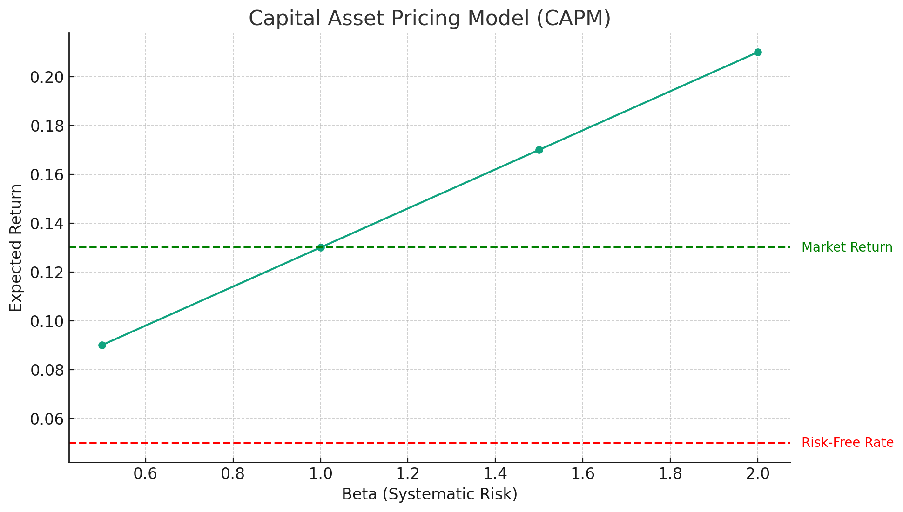

Capital Asset Pricing Model (CAPM)

The diagram above represents the Capital Asset Pricing Model (CAPM). In this model, the expected return on an investment is plotted against its beta, which measures the investment's systematic risk relative to the market. Key points in the diagram are:
- Risk-Free Rate: Indicated by the red dashed line, this is the return on an investment with zero risk (typically a government bond yield). In this example, it's set at 5%.
- Market Return: Represented by the green dashed line, this is the expected return of the market. It is calculated at a beta of 1, which represents the market's own risk level.
- Expected Return: This is calculated for different values of beta (0.5, 1.0, 1.5, and 2.0 in this example). As beta increases, indicating higher risk compared to the market, the expected return also increases. This line demonstrates the basic premise of CAPM: higher risk (higher beta) is associated with higher expected returns.
This diagram is a simple visualization of how CAPM quantifies the trade-off between risk and return.